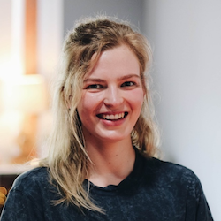

Tirta Susilo | Group Leader
Tirta Susilo | Group Leader
Tirta is senior lecturer in the School of Psychology and director of the Cognitive and Behavioural Neuroscience (CBNS) research programme at Victoria University of Wellington. Tirta did his PhD at the Australian National University and his postdoctoral training at Dartmouth College. Tirta’s research expertise is perception, cognition, and neuroscience, with a special focus on face processing. [Homepage] [Email]
 Lizzie Collyer | Research Assistant
Lizzie Collyer | Research Assistant
Lizzie is a research assistant working on multiple projects on face and object processing using experimental, eye tracking, and modelling approaches. Lizzie completed her MSc thesis in the lab, which examines attention to illusory faces and how it compares to attention to real faces. Prior to doing her MSc Lizzle worked in the lab as a CBNS student and a summer scholar. Lizzie holds a BA in psychology and classics.
 Jaiden Cancian | MSc Student (Clinical)
Jaiden Cancian | MSc Student (Clinical)
Jaiden is completing his MSc thesis as part of his clinical training. Jaiden's thesis investigates face detection in developmental prosopagnoisa. Jaiden was previously an Honours student and a research volunteer in the lab, working on various projects on unconscious processing of faces and laterality effects in face recognition. Jaiden holds a BSc in psychology and criminology.
Veronica Ellis | MSc Student (CBNS)
Veronica is completing her CBNS part 1 training in our group. Her research project uses eye tracking to examine rapid attention to faces and objects. Veronica will continue working on her research as summer scholar and MSc thesis student next year. Veronica holds a BA in psychology and marketing.
 Dayna Edge | Research Volunteer
Dayna is an undergraduate research volunteer. She has been helping with our recent eye tracking projects and is keen to develop her research interests in our group as summer scholar and MSc or honours student next year. Dayna is completing her GradDip in psychology.
- © Untitled
- Design: HTML5 UP